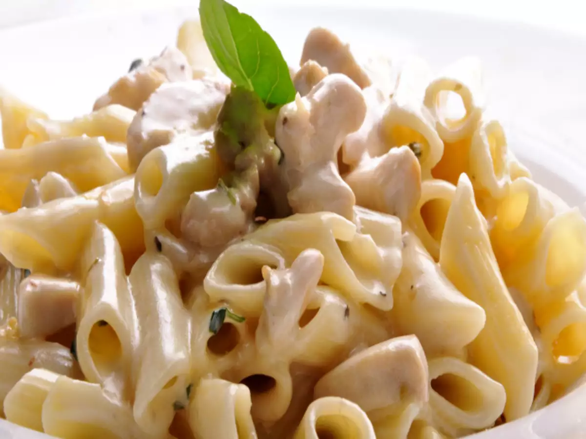

White Sauce Pasta

Description
In this recipe you will learn how to make white sauce pasta.
Ingredients
- pasta of your choice;
- 1 cup of milk.
- 1 spoon of corn starch.
- 1 box of heavy cream.
- salt.
- onions.
- 1 spoon of butter.
Steps
- fill a pan with water, enough water so that the pasta gets completely covered;
- heat up the pan until the water starts boiling, then add the pasta and some salt;
- get another pan to make the sauce;
- put 1 spoon of butter and some small pieces of onion;
- put the heavy cream when the onions start to get golden;
- put the corn starch spoon in the cup of milk and mix it;
- put the mix in the pan when the heavy cream starts to boil;
- keep mixing it until it all starts boiling, then turn the fire off and let it rest;
- have a look at the pasta to see if it is ready, then take the water off;
- mix the pasta with the sauce and you are ready to go;